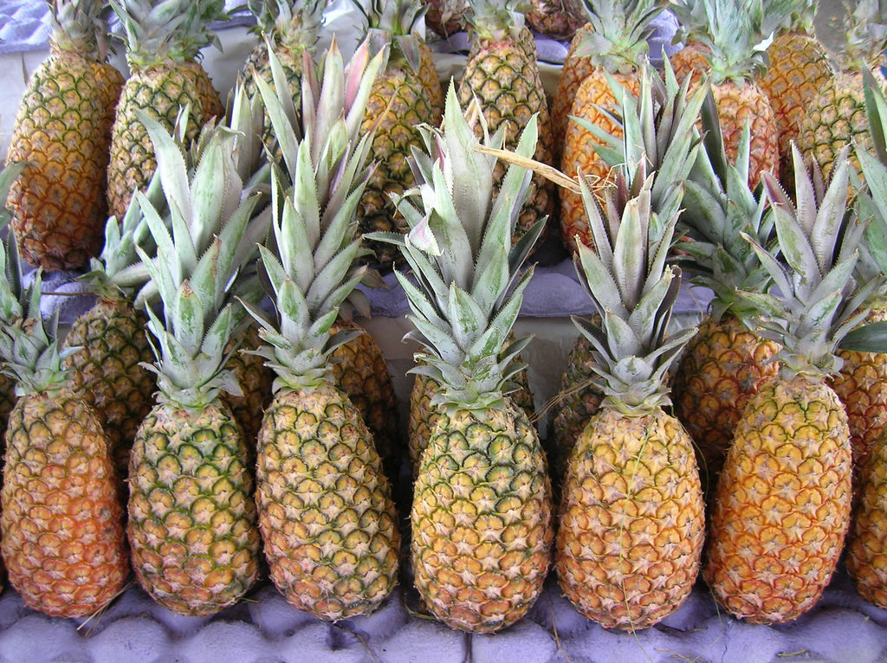
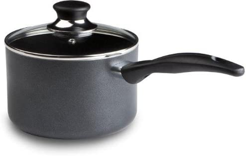
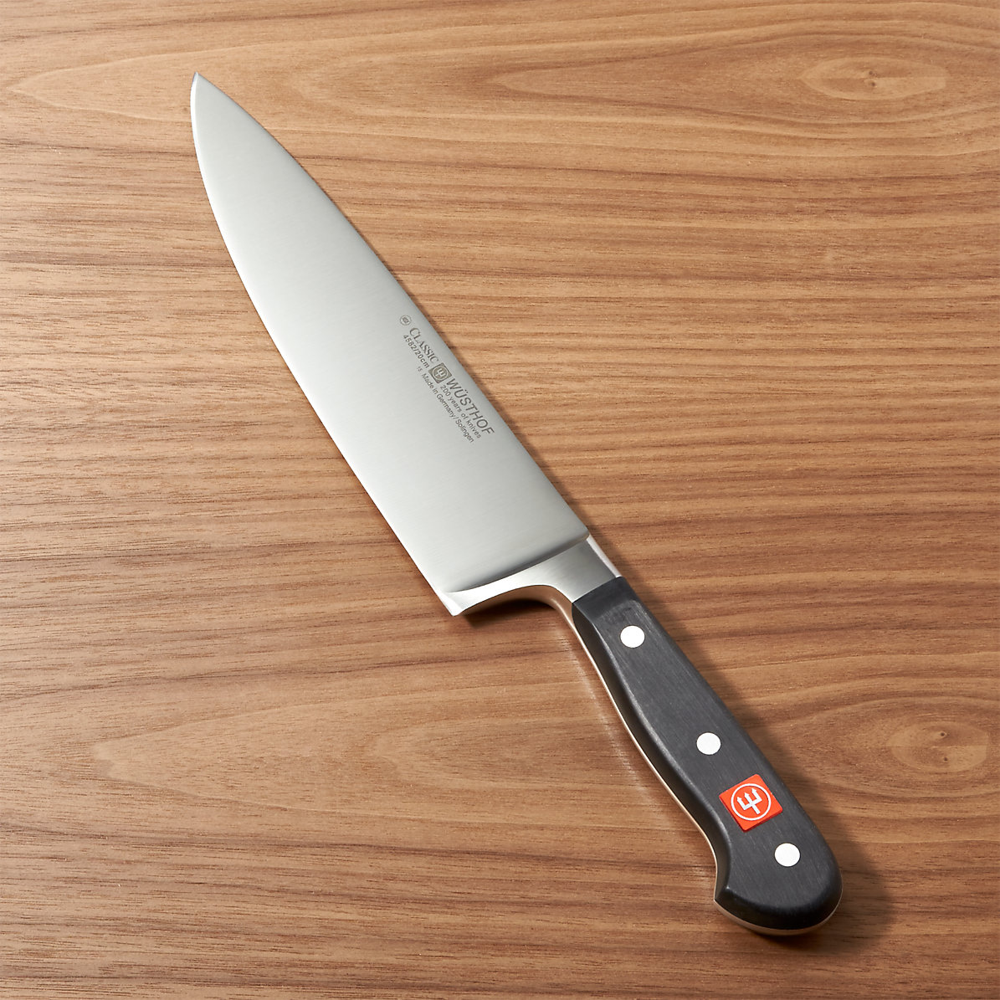

1. 1 large pineapple ready for eating

2. 2 cups or 500 grams of water
3. a pot to store the water in

4. a knife to cut the pineapple

5. a fire I suppose, any kind
Print Recipe
Whats up fellas its Leon Kang here to hit you with a real nice recipe to warm your insides on a cold winters morning or afternoon
My grandfather taught me this recipe as a little child whenever we had leftover boiling water and canned pineapples, I hope it will bring you the taste of medicine as it brought me those many years

 >
>